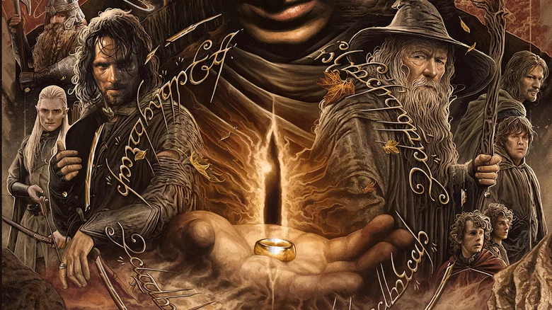

Welcome, {{ session['username'] }}! Logout
{% endif %}{{ current_datetime }}
Join the Fellowship today and Register for an Account Here
Or resume your journey through Middle Earth. Log In Here
Let's dive into one of the best cinematic trilogies of all time!
The Fellowship of the Ring The Two Towers The Return of the KingA. Gray. "How The Lord of the Rings Trilogy Changed Movies Forever". Nov 22, 2012. IGN.com. https://www.ign.com/articles/2012/11/22/how-the-lord-of-the-rings-trilogy-changed-movies-forever
R. Motamayor. "5 Ways The Lord of the Rings Changed Blockbusters Forever". Dec 18, 2021. Rotten Tomatoes. https://www.ign.com/articles/2012/11/22/how-the-lord-of-the-rings-trilogy-changed-movies-forever